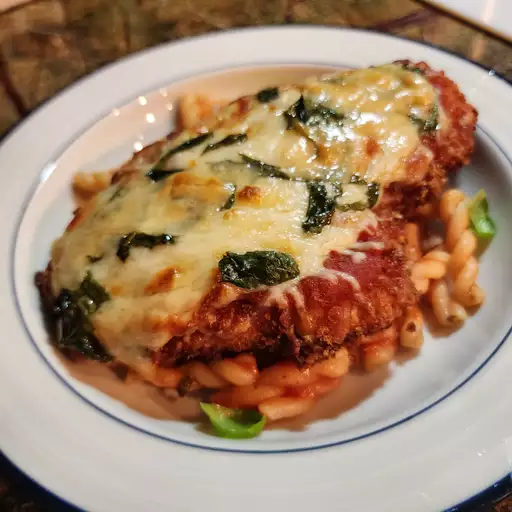

Chicken Parmesan

Description
A recipe made by Chef John and it has a rating on allrecipes of
a 4.8. They state multiple tips on how to improve this dish. The most
important seem to be making sure the chicken is thinned out and resting
the chicken before cooking. This recipe seems to take into consideration
all the pitfalls that can be made so your chicken parm can be the best!
Ingredients
- 4 skinless,boneless chicken breast halves
- salt and freshly ground black pepper to taste
- 2 large eggs
- 1 cup panko breadcrumbs or more as needed
- 3/4 cup grated Parmesan cheese,divided
- 2 tbsp all-purpose flour or more if needed
- 1/2 cup olive oil for frying
- 1/2 cup prepared tomato sauce
- 1/4 cup fresh mozzarella, cut into small cubes
- 1/4 cup chopped fresh basil
- 1/2 cup grated provolone cheese
- 2 tsp olive oil
Steps
- Preheat an oven to 450 degrees F
- Place chicken breasts between two sheets of heavy plastic
(resealable freezer bags are good) on a solid, level surface.
Firmly pound chicken with the smooth side of a meat mallet to a
thickness of 1/2 inch.
- Season chicken thoroughly with salt and pepper. Using a sifter or
strainer; sprinkle flour over chicken breats, evenly coating both sides.
- Beat eggs in a shallow bowl and set aside.
- Mix bread crumbs and 1/2 cup Parmesan cheese in a separate bowl,set aside.
- Dip a flour-coated chicken breat in beaten eggs. Transfer breast to the
bread crumb mix, pressing crumbs into both sides. Repeat for each breast.
Let chicken rest for 10 to 15 minutes
- Heat 1/2 inch olive oil in a large skillet on medium-high heat until it begins
to shimmer. Cook chicken in the hot oil until golend, about 2 minutes per side.
It will finish cooking in the oven later.
- Transfer chicken to a baking dish. Top each breast with 2 tbsp tomato sauce.
Layer each chicken breast with equal amounts of mozzarella cheese, fresh basil,
and provolone cheese. Sprinkle remaining Parmesan over top and drizzle each with
1/2 tsp olive oil.
- Bake in the preheated oven until cheese is browned and bubbly and chicken breasts
are no longer pink in the center, 15 to 20 minutes. An instant read thermometer
instered into the center should read at least 165 degrees F.
Source
Full recipe
All the credit goes to chef John on allrecipes for this amazing recipe!